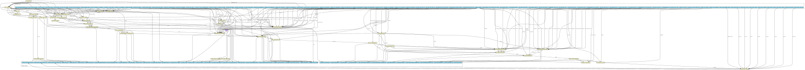

A CWL-based pipeline for calling small germline variants, namely SNPs and small INDELs, by processing data from Whole-genome Sequencing (WGS) or Targeted Sequencing (e.g., Whole-exome sequencing; WES) experiments. On the respective GitHub folder are available: - The CWL wrappers and subworkflows for the workflow - A pre-configured YAML template, based on validation analysis of publicly available HTS data Briefly, the workflow performs the following steps: 1. Quality control of Illumina reads (FastQC) 2. Trimming of the reads (e.g., removal of adapter and/or low quality sequences) (Trim galore) 3. Mapping to reference genome (BWA-MEM) 4. Convertion of mapped reads from SAM (Sequence Alignment Map) to BAM (Binary Alignment Map) format (samtools) 5. Sorting mapped reads based on read names (samtools) 6. Adding information regarding paired end reads (e.g., CIGAR field information) (samtools) 7. Re-sorting mapped reads based on chromosomal coordinates (samtools) 8. Adding basic Read-Group information regarding sample name, platform unit, platform (e.g., ILLUMINA), library and identifier (picard AddOrReplaceReadGroups) 9. Marking PCR and/or optical duplicate reads (picard MarkDuplicates) 10. Collection of summary statistics (samtools) 11. Creation of indexes for coordinate-sorted BAM files to enable fast random access (samtools) 12. Splitting the reference genome into a predefined number of intervals for parallel processing (GATK SplitIntervals) At this point the application of multi-sample workflow follows, during which multiple samples are concatenated into a single, unified VCF (Variant Calling Format) file, which contains the variant information for all samples: 13. Application of Base Quality Score Recalibration (BQSR) (GATK BaseRecalibrator and ApplyBQSR tools) 14. Variant calling in gVCF (genomic VCF) mode (-ERC GVCF) (GATK HaplotypeCaller) 15. Merging of all genomic interval-split gVCF files for each sample (GATK MergeVCFs) 16. Generation of the unified VCF file (GATK CombineGVCFs and GenotypeGVCFs tools) 17. Separate annotation for SNP and INDEL variants, using the Variant Quality Score Recalibration (VQSR) method (GATK VariantRecalibrator and ApplyVQSR tools) 18. Variant filtering based on the information added during VQSR and/or custom filters (bcftools) 19. Normalization of INDELs (split multiallelic sites) (bcftools) 20. Annotation of the final dataset of filtered variants with genomic, population-related and/or clinical information (ANNOVAR)
{kind=link}